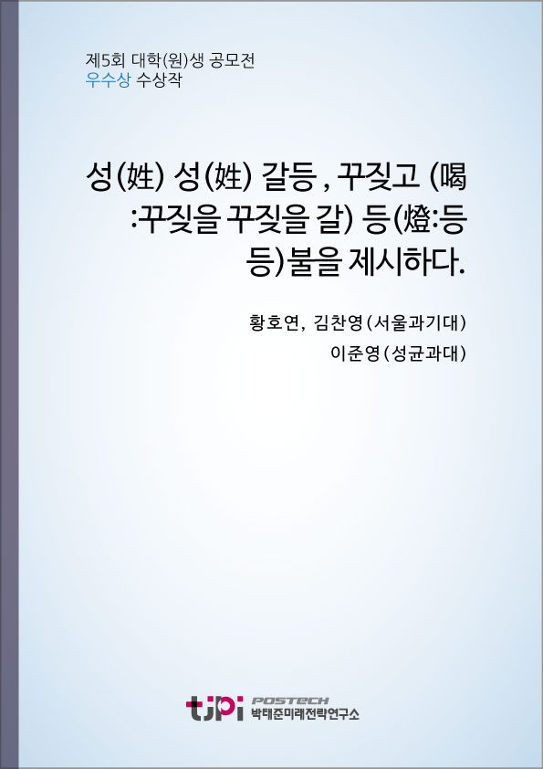

저자 황호연, 이준영, 김찬영보도일 2018.10.10

요 약
성(姓) 갈등 , 꾸짖고 (喝:꾸짖을 꾸짖을 갈) 등(燈:등 등)불을 제시하다.
이러한 젠더 갈등을 해소하고 소모적인 논쟁을 해결하는 데 어떠한 해결책들이 있을까?
이 글이 제시하고자 하는 바는 ‘분산 변화’(distributed change)이다.
한 사람이 자동차를 들어서 뒤집는 것은 사실상 불가능하다.
하지만 하나하나 부품을 나눠서 뒤집으면 누구나 손쉽게 할 수 있는 일이 된다.
생각해보면 젠더갈등의 시작은 자동차를 한 번에 뒤집으려는 시도였는지 모른다.
문제가 풀리지 않을 때 할 수 있는 제일 나은 방법은 가장 기본적인 해결책을 찾고 그 문제를 그것에 맞게 치환시키는 것이다.
그리고 그에 맞는 알고리즘을 새워서 하나씩 적용하여 풀어나가야 한다.
<저자 소개>
서울과학기술대학교 기계시스템디자인공학과 황호연
성균관대학교 행정학과 이준영
서울과학기술대학교 컴퓨터공학과 김찬영
목 차
성평등? 성갈등? 어디에서 시작되었나?
性과 工이 낳은 결과
교육(敎育)의 효과, 여성공학도 양성
해외 국가들의 정책, 온고지신(溫故知新)적 수용(accept)
혜화역 시위, 미성숙한 페미니즘
페미니즘 - 정치적, 사회적, 도구로 전락하다.
법(法), 교육(敎育), 언론(言論) - 합리적인 처방전
갈등해결의 방향성을 제시하며
내 용
[2018 청년 에세이 우수상 10] 성(姓) 성(姓) 갈등 , 꾸짖고 (喝:꾸짖을 꾸짖을 갈) 등(燈:등 등)불을 제시하다.
황호연, 이준영, 김찬영
성평등
성갈등
어디에서 시작되었나
비록 민주주의 사상이 세계 각국의 주요 정치 이데올로기로
자리 잡은 지 얼마 되지 않았지만
오랫동안 이어진 인류 역사 속에서 인권이나 평등
자유를 향한 투쟁과 그에 따른 이데올로기의 진화 및 흥망성쇠는 유구한 맥락을 지니고 있다
하지만 그 대상은 보통 서양에서는 중산층 백인 남성 또는 군 계층이었고 다른 사회적 약자들
특히 여성은 다소 배제됐다는 한계가 있었다
근대 유럽 민주주의 철학의 시발점이자 사회계약설의 거장
장 자크 루소
(Jean Jacques Rousseau)
열등한 이성을 지닌 여성을 지닌 여성이 남성에게 종속되는 것이
곧 자연법
이라고 주장하였다
이러한 루소
사상에 반대하며 여성 인권을 외친 최초의 철학자 메리 울스턴크래프트
(Mary Wollstonecraft)
1792
년 「여성의 권리옹호」라는
저서에
여성도 남성과 동등한 이성을 갖고 있으며
여성이 복종해야 할 대상은 아버지나 남성이 아니라 인간 고유의 이성
이라고 주장했다
그녀는 최초의
페미니즘 운동가로 대중에게 알려졌으며 이러한 여성인권 운동의 시작은 겨우
200
년 전에 불과하다
동양에서도
중화사상과 가부장적 가정사회를 기반으로 하는 성리학
여성의 발 모양을 인위적으로
변형하기 위해 사용되는 전족
양성 간 경제적 종속관계의 불평등을 대표하는 다우리 제도
등을 예로 들 수 있다
하지만 프랑스 혁명을 계기로 자유와 평등에 대한 갈망은 올랭프
드 구주
(Olympe
de Gouges)
라는 첫 번째 여성 참정권 운동가를 낳았으며 그녀가 단두대에서
외친 여성 인권을 위한 단말마에 세계사는 처음으로 여성 인권과 참정권에 주목하기 시작했다
하지만 각국의 인권선언문이나 법안에 여성의 참정권을 보장하는 국가는 없었으며 이는 자유민주주의의 상징
국가인 미국의
독립 선언문
에도 평등과 자유혁명의 대표 국가인 프랑스의 경우에도
프랑스 인권선언문
이 작성된 후 여성 참정권을
보장하기까지
150
년에 가까운 시간이 흐른 뒤였다
페미니즘 또는 양성평등주의 역사는 여성 참정권을 위한
투쟁으로부터 시작한다
서방세계 정치 참여의 역사는 유산계급 백인 남성
노동자
흑인 남성 그리고 마지막에
와서야 여성의 참정권이 보장되기 이른다
현재 여성인권이 가장
많이 보장된 국가 중 하나인 뉴질랜드에서 최초의 여성 참정권이
1893
19
일에 주어졌다
하지만 이는 여성들에게 선거권만이 보장된 것일 뿐 피선거권까지 주어진 것은 그로부터
30
년이 지난
1919
년에 이르러서였고
첫 여성의원이 탄생한 것은
1933
년이었다
뉴질랜드에 이어서 세계
각국도 변화의 물결에 따라 서서히 여성 참정권을 보장하는 법안을 발의했으며 이 과정에서 수많은 여성의 투쟁과 목소리가 무시되기도 하였다
대한민국의 경우
, 1948
정부 수립과 동시에 남녀 모두에게 참정권이 보장되었다
. 1947
년 미 군정기에
우리나라 여성 정책을 담당하는 기구인 보건후생부의 부녀국이 설치된 것으로 시작하여 현재 정부 부처
중 하나인 여성가족부에 이르기까지 대한민국의 여성 정책의 양상도 교육
정치
복지 등 많은 분야에서 발전을 거듭했으며 특히 정치에서는 여성의원의 비율이 꾸준히 늘어나고
2014
년 제
18
대 대통령 선거에서는
최초의 여성 대통령이 탄생하기도 하였다
고대 한반도 국가들은 다소 양성 인권이 동등하게 보장된
편이었다
신라의 경우 여성의 경제권이 남성과 동등하게 보장된 편이었으며 여왕도 두 명이나
즉위하였다
발해의 경우 남자는 첩을 둘 수 없었을 뿐만 아니라 매춘업도 없었다고 한다
무엇보다 고려의 경우
여성도 호주가
될 수 있었으며 재산 상속도 동일하게 받을 수 있었다고 한다
하지만 조선
시대부터 오랫동안 이어져 온 성리학과 가부장적 사회의 결과물에 대한민국은 아직도 후유증을 앓고 있다
여성은 오랜 차별과 불평등에 지쳐 목소리를 내고 있으며 이에서 오는 부작용과 역차별 등으로 남성들
역시 눈살을 찌푸리고 있다
결국
, 2016
017
일 오전
시경
서초동 인근의 한 화장실에서 일어난 살인사건은 대한민국의 젠더갈등을 증폭시키는
촉매제
역할을 했다
결과적으로 여성들의 사회 구조적 차별로부터 오는 불만과 범죄에 노출됨으로써 오는 불안감을 자극했고
남성들의 경우
여성 인권보장 정책이나 시위 등에서 오는
불편한 용기
의 목소리 등에 바뀌어 가는 사회양상에 대한 불만과 분노를
표출하고 있다
. 2
년이라는 시간이 지난 지금
우리 사회는 남녀를 나누고 나아가 서로를 적으로 여기는 문화가 널리 만연해있다
김치녀
한남
등 양성을 부적절하게 정의하는 용어가
SNS
에 만연하며 때로는 여성인권보장 시위 등에 사용이 되어 서로에 대한 악감정을 부추기고 있다
이러한 흑백논리 문제를 완화하고 양성평등을 실현하여 젠더간 갈등을 해소하는 방법은 어떤 것이 있을까
본 글은 현대 우리 사회가 직면한 젠더 갈등 문제를 사회 구조에서 오는 성적 불평등의 문제점 분석
그리고
페미니즘
이라는 화두가 현재 우리 사회에 무슨 영향을 끼치고 어떠한 양상으로 나타나고 있는지 알아본 다음 각
문제가 지니고 있는 부작용에 대한 해결방안에 대해서 소개하고자 한다
性과 工이 낳은 결과
성리학
性理學
을 기본 이념으로 채택하여 건국된 조선왕조 때부터 우리 사회는 여성의 사회적 진출이 지극히 제한되어왔다
대한민국 정부가 수립된 이후에도 암묵적인
가부장제도
남아선호사상
은 정부가 추진한
70~80
년대
여성교육에 대한 교육정책의 칼날을 무디게 만들었으며 그 결과
남성중심 경제활동
구조는
70~80
년대의 많은 여성에게 교육의 기회와 사회 참여 기회를 앗아갔다
대한민국은 제조업을 기반으로 하는 공업사회
工業社會
이다
자연스럽게 공대를 진학한 다수 남성
男性
들이 일자리의 대부분을
차지하였고
제조
製造
업을 기반으로 하는 대다수의
대한민국 기업은 상대적으로 신체적 조건이 우월하고 공학 분야로 진출한 남성들을 선호하였다
그 결과 남성이 대다수 일자리 수혜자가 되었다
하지만
21
세기에 들며 세상과 패러다임의 변화와 함께 많은 수의 여성들이
사회로 진출하기 시작하였다
통계청에서 발표한 자료에 따르면
, 25~34
세 여성의 경제활동참여율이
1980
년의
36.0%
에서
2012
년에는
63.2%
로 상승하였다
반면
동일 연령대의 남성의
경제활동참여율은
96.3%
에서
84.3%
로 지속해서 감소했다
이를 통해 여성의 사회진출을 위한 교육과 대학 진학률이 확연하게 증가한 것을 알 수 있다
여성을 대하는 사회적 시선도 많은 것이 변했다
여성은 다양한 분야에서 그 능력을 인정받고 있으며 고위 관리직과
CEO,
나아가 대통령이라는 직책까지 그 범위를 확장해 나가고 있다
이처럼 여성의 사회진출이 점점 더 자유로워지고 있지만
초기 사회진출 여성들의 배려는 극히 제한적이었다
남성 중심의 보수적 이념과 경제구조 및 사회에서 여성에 대한 배려는 부족했다
양질의 교육을 받은 여성들은 인권 보장에 대한 목소리를 내기 시작했다
임신 및 육아로 인한 경력단절을 포함한 불합리한 것들을 없애고 안정적인 사회진출을 보장받길 요구했다
. 2001
11
일부터 모성보호 관련법인 근로기준법
남녀고용평등법 및 고용보험법이 개정
시행되면서 산전후휴가급여 및 육아휴직급여제도가 도입되었고
이로써 모성보호를 강화하고 직장과 가정의 양립지원을 위한 제도적 체계를 마련하는 한편
출산과 육아에 대한 책임이 개인과 기업의 부담에서 사회적 책임으로 전환되는 계기를 맞게 되었다
.(
개정된 모성보호 관련 법제의 실시현황과 효과분석
여성부
.)
하지만
기업에게 육아휴직 및 여성 일자리의 보장은 좋은 소식이 아니었다
이윤추구를 기반으로 만들어진 조직은
나아가 그 조직이 공업을 기반으로 하는 기업이라면 엔지니어들의 경력단절은 회사에 큰 손실을 줄 확률이
있기 때문이다
다시 말해 직원 한 명이 아이를 낳는 것은 국가적으로는 도움이
되나 기업의 이윤 추구에는 방해될 수 있다
육아는 체력을 많이
소모하는 행동이며
정서적으로도 회사에 비해 가족에 신경을 더 써서 업무 집중도가
낮아지는 경우도 있으며
추가업무에 대한 거부감도 증가한다
기업 입장에서 직원에게 휴가를 주며 다시 돌아오기를 기대하기보단
새로 직원을 모집하는 것이 더 이익이라는 논리이다
하지만 돌아온 직원의 손에 사표가 들려있는 경우
손해는 기업에 고스란히 전가된다
따라서 기업은 여성 직원을 많이 두지 않으려고 하였고
여성들은 복지와 안정성이 보장된 공공기관을 더욱 추구하였다
자연스럽게
물과 기름
의 관계가 되었고 그에 대한 결말은 명확했다
많은 수의 여성들은 사기업보단 공무원과 공기업을
공대보다는 인문과 상경계열을
이과보다는 문과를 추구하였다
이러한
사회구조는 젠더갈등유발의
시발점
이자 끊이지 않는
연료
와 같다
필자는 연료의 공급을 차단하고
사회구조를 변화시킬 수 있는 해결책을 제시하고자 한다
교육
敎育
의 효과
여성공학도 양성
필자가 고등학교에 재학했던 때는 일명
문자 세대
의 종말의 시기였다
스마트폰의 보급이
시작되었고
애플리케이션
이라는 혁신적인 아이템들이 쏟아져 나오기 시작했다
이에 따라 많은 수의 학우들이 기계공학이 아닌
IT,
전자공학
컴퓨터공학을 진학하길
원했다
여성 학우들도 예외는 아니었다
하지만 당시 수학 선생님은 그녀들의 꿈을 꺾을 수 있는
말씀을 하셨다
현실을 봐라
여자들은 삼성전자
같은 대기업을 가도 결혼하고 애 낳으면 회사에서 눈치 주고 나가라고 한다
그리고 애초에 여자를 많이 뽑지도
않아
의료계열이나 자연과학을 전공해라
라고 말씀하신 선생님의 말씀을 잊을 수 없다
다시 생각해보면
잠재적인 훌륭한 여성 공학도 몇 명을 잃게 만든 말일 수도 있다
비슷한 경험을 한 동기들의 얘기를 들어보면 이런 일이
적지 않다
교육의 힘은 무섭다
많은 사람들은
교육
을 통해 얻게 된 지식이나 경험을 바탕으로 자신의
을 걷게 된다
즉 교육은 긍정적인
효과를 낼 수 있는 가장 좋은 방법 중 하나이며 다수의 인식을 바꿀 수 있는 가장 좋은 수단이다
고등학생들은 어떨까
그들에게 있어서
교육이란 사고관념 자체를 바꾸고 진로를 결정하는 좌표가 될 수 있다
그러므로 다음과 같은 세 가지 교육 변화를 대안으로
제시하고자 한다
첫째로 중학교에서 시행 중인 자율학기를 활용하여 대한민국의
공업 시장을 교육하여 고등학교를 선택하고
나아가 문
이과를 선택하는
데 있어서 참고하게 해주는 것이다
교육부는 학생들에게 고
때 문
이과의 두 갈래
길을 제시한다
하지만 대부분의 학생들은 자신이 무엇을 하고 싶은지 잘 알지 못한 채 진로 선택을 한다
중학생 때 여러
가지 진로 교육을 통해 학생들이 한 번쯤은 생각을 해보고 고등학교에 진학하여
한 학기를 마무리하고 자신의
길을 선택하게 하자는 것이 제도 도입의 취지이다
진로선택에 도움을 줄 수 있는 효과는 물론이고
여학생들의 이공계
진학에도 큰 영향을 미칠 수 있다
시작이 반이다
라는 말이 있듯이 첫 번째 정책이 가장 중요한 정책이다
둘째로 인문계열 고등학교에 진학 중인
학년 학생들을 대상으로
체험 프로그램의 확대를 권장한다
실제로 고
KAIST
에 견학을 다녀온 필자는 공대에 진학을 꿈꾸었고
이공계열 학생이
되었다
하지만 이런 체험의 기회는
TO
가 한정적이다
공업계열
, IT
계열 그리고
의학대학이 협력하여 많은
TO
를 제공하고
상경계열과 언론계열
그리고 로스쿨이
합작하여 인문계열 학생들에게 체험의 기회를 제공해주면 학생들에게 큰 도움이 될 것이다
나아가 프로그램을 실시한 기업과
대학의 이미지가 개선될 가능성도 유망하며
미래 경제활동의 주역들을 육성함에서도 긍정적인 효과를
불러일으킬 것이다
셋째로 임용고시에 합격한 예비 선생님들을 대상으로 하는 진로교육 프로그램
교육자의 교육
프로그램 도입이다
위의 두 프로그램을
선이수하고
더욱 보완하여 학생들에게 양질의 교육을 해줄 수 있도록 하는 프로그램이다
나아가 선생님들의 성별 고정관념을
없애줄 수 있는 교육을 도입해야 한다
선생님들은 앞의 두 프로그램에 있어 아이들을 이끌어 줄 지도자가 될 사람들이다
예비 선생님들이
여학생은 여자다운
진로를
남학생은 남자다운 진로를 선택해야 한다
라는 고정관념을 없애고
편견 없이 학생들을
바라봐 줄 수 있도록
교육자의 교육
을 도입해야 한다
해외 국가들의 정책
온고지신
溫故知新
적 수용
(accept)
여성의 사회진출이 점점 늘어나고 평등한 사회를 추구하는 사회 기저 속에서 최근에는 사기업도 공공기관만큼은 아니지만
여성 직원을 위한 정책들을 내놓기 시작했다
그 중에도 대표적인 것이 법으로 보장되고 있는 육아휴직 제도이다
대표적인 대한민국의 기업인 삼성은 육아휴직을
년에서
년으로 늘리는 방안을 시행 중이다
한편
, POSCO
는 조금 더 앞서 같은 정책을 내놓았다
더하여 육아휴직을 사용하는 대신 주당
15~30
시간만 근무하는 근로시간 단축 근무를
신청할 수 있다
. 3
년을 보장해주는 공공기관엔 못 미치지만
국내 기업들의 최근 동향을 보면 여성에게 우호적인 정책들을 내놓았다
하지만 여성의 경력단절은 풀리지 않는 숙제로 남아있고 이에 따른 젠더갈등 또한 누그러질 기미가 보이지 않는다
따라서 유럽의 정책을 바탕으로 개선된 육아휴직 제도를 도입하는 방안을 제안하고자 한다
하지만 해외의 정책을 복제
(Copy)
가 아닌 모방
(Imitation)
쪽으로 도입을 유도하고자 한다
첫째로 육아휴직 기간을
년으로 보장하는
것을 법으로 제도화할 것을 제안한다
북유럽의 복지선진국의 경우 출산을 한 여성에게
년을 보장받는다
하지만 정치적
경제적으로 대한민국에 입혀보면
66.6%
만 가져오는 것이 현명한 정책이라고 생각한다
또한
수당 상한선을 조정할
필요가 있다
. 1,800
유로
230
만원
를 받는 독일의
66%
150
만 원으로 조정을 요구한다
이 정책들은 저출산 문제에도 긍정적인 효과가 기대된다
제도가 굳어지고 긍정적인 효과를 가져오게 되면 점차 그 기간을 늘리는 방식으로 개선을 시도하는 것도
가능할 것이다
둘째
남성의 육아휴직 기간을 법적으로 보장하는 제도가 아닌
법적으로 반드시 사용하도록 하는 제도이다
남성이 육아휴직을 사용할 경우 직책갈등
인사고과 불이익
부서변경 등
많은 불이익을 겪게 된다
하지만 법적으로 보장한다면 이런 불이익은 발생하지 않는다
기간은 여성이 보장받는 기간의
1/4
이 적당하다
여성의 경력단절을 덜어내는
효과가 발생할 것이고
사회적
경제적으로 젠더갈등을 해소할 수 있는 열쇠가 될 수 있다
하지만 이러한 정책을 도입하는 과정에서 문제점이 발생할 수 있다
. 2017
년 말 국방기술품질원 정책기획실에 근무 중인 한 여성은 공공기관의 복지를 활용하여
년간 육아휴직을 신청하고 박사과정을 수료했다
충청남도에 근무 중인 한
급 공무원을 육아휴직의
30%
를 해외여행에
할애하며
개국을 여행한 사실이 밝혀졌다
만약 법적으로 보장받는 기간이
년으로 늘어나면 이런 상황이 더 많이 발생할 것으로 예상된다
따라서 이러한 남용을 막기 위한 법적 규제를 만들 필요가 있다
예를 들어 대학원 진학을 일체 금지해야 한다
하지만
학기 이상 수료를 마친
사람은 예외로 한다
또한
아이를 동반하지 않은 해외여행은 기간을 제한하고 출국 후 재출국함에서 기간을 제한하는 것도 하나의
방법이 될 수 있다
여성의 육아휴직을 탐탁지 않게 바라보는 남성들의 시선을 거둘
수 있는 방법 중 하나이다
물론 이런 규제들은 육아휴직을 사용하는 남성들에게도 동등하게
적용돼야 한다
혜화역 시위
미성숙한 페미니즘
지난
일 홍대 미대 수업 중 남성 누드모델 몰래카메라 사진을 올린 인터넷 여성 커뮤니티
워마드
의 여성 회원이 경찰에 신속하게 검거되자 수많은 여성들이 혜화역에서
범인이 여자라서 수사가 빠른 것 아니냐
고 항의하는
목소리를 내었다
그들은
여성을 대상으로 한 남성 몰카범에 대해서도 신속한 수사와 처벌이 필요하다
고 주장하였고 여성들이 받는 불평등한 처우에 대해 비판하고자 자발적으로 모여서 집회를 열었다
현재까지 혜화역에서 총 세 차례의 집회가 열렸으며 자유로운 목소리를 존중하는 사람들은 그동안 있었던
여성들에 대한 차별을 지적하고 그를 극복하는 행위라고 옹호하지만
일각에서는
남성 비하 및 혐오 표현을 사용하는 행위에 대한 불편함을 드러내기도 했다
집회 참여자들은 성별에 따른
편파 수사
를 중단하고 남성 경찰총장
검찰총장을 파면하여 그 자리를 여성이 대체하도록 촉구하고 있다
또한
몰래카메라 수사가 착실하게
이뤄지지 않는 것을 남성 위주의 경찰구조에서 기인하는 것이라 주장하며 대안으로 여성 경찰과 남성 경찰의 임용비율
을 내세우고 있다
성범죄 처벌의 강도나 발생빈도 또는 여성을 대상으로 하는 기타 범죄들로 미루어 보아 여성들이 집회를
여는 이유는 타당하다
하지만 그들이 보여주는 시위 문화나 용어 등은 전혀 성숙하지
못한 방향으로 진행되고 있다
2017
월까지 진행된 대통령
국정농단을 비판하는 촛불집회는 지극히 평화적이고 사회통합을 저하하지 않는 방향으로 이뤄져 외신들도 이를
한국의 성숙한 집회 문화
라고 하며 긍정적인 보도를
이어나갔다
2017
년 초반 한자리 수대의 지지율을 기록한 박근혜 전 대통령은
200
만이라는 대표를 둔 대부분의 국민에게 분노를 샀고 성숙한 시위 문화와 평화 집회는 이윽고 국가 리더의
교체라는 큰 변화를 낳았다
하지만 혜화역에서 보이는 페미니즘 시위의 양상은 적절하지
못한 방향으로 흐르고 있다
가부장적 한국 남성을 벌레에 비유하는
한남충
이라는 단어는 어느새 일반적인 한국 남자들을 일컫는 혐오성
단어가 되었고 그들이 시위에서 사용하는 용어는 故 성재기의 한강 투신을 비하하고 조롱하는
재기해
남성의 성기
크기를 비난하는
소추남
등 부적절한 혐오의식을 드러내고 있다
그뿐만 아니라 최근에는 문재인 대통령에 대한 부적절한 비하 표현으로 여론의 뭇매를 맞고 있다
또한
인터넷 여성 커뮤니티
사이트에선 페미니즘이라는 명목하에 남성혐오성 단어를 남발하고 있으며 양성평등 이념의 본질을 흐리고 있다
천주교의 여성박해성 언급과 예수가 남성이라는 이유를 들어 성체를 불태우며 인증하거나 자고 있는 아버지의
얼굴에 칼을 들이밀며
한남 칼빵 놓기 딱 좋노
라고 하며 패륜 행위를
저지르고 있다
양성평등을 추구하는 정의로운 목소리 대신 점점 남성혐오와
젠더갈등을 부추기는 악성 소음을 불러일으키고 있다
언론은 정확한 사실에 대해 보도하고 올바른 방향으로 여론을 형성해야 할 의무가 있다
하지만 이념이나 정부 성향에 따라 보도의 편향성이 나타나기도 한다
대표적인 진보 언론으로 분류되는
JTBC,
한겨레나 경향신문은 혜화역 페미니즘 집회에 대해 상당히 긍정적인 시선으로 기사를 작성하고 있으며 여성의
자유와 평등을 지지하고 옹호하는 칼럼들을 상당히 많이 생성하고 있다
이는 문재인
정부가 페미니즘 운동의 정당성을 인정해주고 지지하고 있기 때문이기도 한데 대통령뿐만 아니라 다수의 정치인이 이러한 사회적 흐름을 이용하고 있다
그래서인지 언론에서 보도되는 내용 중 시위에서 사용됐던 남성 혐오적인 구호와 단어들은 언급이 되고
있지 않다
이에 많은 사람들은 혜화역 집회의 미성숙함과 어긋난 그들의 외침을 파악하지
못한다
그뿐만 아니라 자극적인 기사 제목 역시 대중들이 혜화역 집회를 올바른 시선을
바라보지 못하도록 방해하는 요인이기도 하다
. 7
일의
차 혜화역 집회를 보도하는
기사들의 경우 제목에
만 명 정도의 집회 참가자가 있다고 과장되어 제목을 작성하는
경우가 대다수다
하지만 사실 참여자는
만 명이 채 되지 않는 경찰 추산
만여 명으로 알려졌으며 필자는 시위가 한창이었을 때 다녀왔지만
만이라는 숫자에 미치기엔 부족해 보였다
페미니즘
정치적
사회적 도구로 전락하다
정치적인 측면에서 이용되는 페미니즘 역시 문제다
최근 열린
6.13
지방선거에서 적나라한
예시를 볼 수 있다
서울시장 모 후보는
페미니스트 서울시장
이라는 타이틀을 들고나와
모 당 서울시장 후보로 선거에 출마했다
하지만 그녀의 공약
개 중
개가 여성 관련 정책이었으며
나머지 하나는 청년 정책 그리고 마지막 하나가 반려동물 및 환경 정책에 관한 내용이었다
특정계층 공략을 위한 전형적인 포퓰리즘 공약이다
하지만 서울 시장이라는 직책은 청년과 여성뿐만 아니라 산업구조
노동자
노인
도시 문제 등 여러 가지 문제를 전반적으로 아우를 수 있어야 한다
하지만 전 후보는 페미니스트라는 슬로건으로 일정 유권자의 표심을 공략하고 정치적 인지도를 쌓으려는
비판을 피할 수 없다
이에 불편함을 느꼈던 모 시민은 그녀의 선거 벽보를 훼손한
사례도 있었다
물론 선거 벽보를 훼손하는 것은 명백한 범죄 행위이며 옹호될
수 없는 행위이다
하지만 그녀는 벽보 훼손 그 자체보다는 그 행위가 여성 혐오라는
프레임을 적용해 지지층 결집에 이용하였다
결국
그녀의 전략은 성공을 거두어 정의당 김종민 후보를 꺾고 당 최초로 득표율
위라는 쾌거를 낳았다
물론 정치적 미성숙으로부터 비롯되는 페미니즘 남용 사례도 이에 상응하는 문제이다
대표적으로 비례대표 의원 출마의 경우
여성의 정치적 권리를 과도하게 보장한 예시로 볼 수 있다
비례대표의 경우에도 홀수 번호는 여성으로 지정해야 한다는 법이 존재하는데 이 법에 따라서 이번
6.13
지방선거에서 기초의원비례대표의
97%
가 여성으로 당선되었다
당선된 비례대표
중에는 정치적 경험이나 지식 등이 없음에도 불구할 뿐만 아니라 이력이 부녀회장
대학 동아리 회장 등이 전부인 경우도 있었다
비록 여성의 정치참여를 확대하고 정치과정에 여성의 목소리를 더 도입하자는 긍정적인 취지에서 시행된
제도이기는 하나 단순히 여성이라는 이유만으로 적절성
적정성 파악이 되지
않은 대표성이 전혀 없는 한 후보를 정치를 허용한다는 것이다
뿐만 아니라
단순히 성별의 문제로 비례대표 정치 참여의 기회를 잃어버린 남성들에게 역차별이 될 수 있다는 우려 역시 존재한다
마지막으로 페미니즘 운동의 남용과 무고한 역차별의 희생자가 되는 남성들에 대한 문제도 있다
계급이나 사회적 구조로 인하여 생기는 성범죄에 항의하는
미투 운동
에 대해 들어보았을 것이다
정당한 여성들의 권리를 되찾고 올바른 방향으로 성범죄를 근절할 수 있는 미투 운동은 당연히 환영받아
마땅하다
하지만 이러한 운동을 악용해 피해남성의 이미지를 이용해서 합의금을 받아내려는
여성도 존재한다
. 2000
11
19
일 예능인 주병진씨
이하 주씨
는 여대생을 성폭했다는
여대생의 신고를 통해 사건이 시작되었다
. 7
년이 지나고 그 여대생은
거짓말을 한 것이 밝혀졌고
주씨는 무죄판결을 받았다
하지만
2000
년대 최고의 인기를
누리던 주씨는 막대한 이미지 손실로 인해 방송에 나오지 못했다
하지만 이러한
피해를 준 여대생은 위증의 혐의로 고작 징역
개월에 집행유예
년에 그치고 말았다
이러한 일련의
사건들은 미투 운동의 본질을 흐리고
피해여성의 용기 있고 정당한 고백을 거짓말처럼 보일 수도
있게 한다
),
교육
敎育
),
언론
言論
) -
합리적인 처방전
이러한 젠더 갈등을 해소하고 소모적인 논쟁을 해결하는 데 어떠한 해결책들이 있을까
먼저 여성을 대상으로 하는 범죄의 근절을 위한 정부의 대책 마련이 시급하다
여성이 겪는 범죄에 대한 두려움은 남성보다 훨씬 크다
화장실에 들어가면 카메라 구멍부터 확인하고
밤에 외출 하면 무서워하는 여성들이 많이 있다
대표적으로 논란이 되는 성범죄로 몰래카메라를 들 수 있다
대한민국 경찰의 몰래카메라 검거율은
2018
월 기준
, 95%
에 도달했다
하지만 몰래카메라 범죄에
대한 형량은 가볍기 그지없다
. 70%
이상이 벌금형을 받았고
징역을 받은 경우는 고작
5%
에 불과했다
가벼운 형량은 자연스럽게
높은 재범률로 이어졌다
이러한
솜방망이 처벌
은 지속해서 발생하는
범죄 그리고 그에 따른 여성들의 불신 및 젠더 혐오의 악순환을 만든다
청와대는 몰카범죄에
대한 대처방안으로 변형카메라 등록제를 도입할 예정이라고 했는데 이보다 확실한 범죄예방 시스템을 구축해야 한다
그 방법은 처벌 강화라고 생각한다
성범죄의 경우
강도 높은
징역형을 구형하거나 흉악범의 경우에는 화학적 거세를 진지하게 고려해야 한다
물론 무고죄에 대한 처벌 수위 역시 강화해야 한다
경제적 갈취나 범죄와는 무관한 개인적 원한으로 무고한 남성을 신고한 경우 신고자에 대한 처벌을 강화하고
성범죄자와 비슷한 수준의 선도가 필요하다
올바른 젠더 개념의 형성 역시 중요하다
성적개념이 생성되기 시작하는 청소년기에 교육을 통해 서로의 성에 대해 이해할 수 있는 프로그램이 필요하다고
생각한다
그뿐만 아니라 청소년들이 자주 접촉하는 대중 매체에서도 양성이 겪는 불편함은
보여주되 성고착화를 초래할 수 있는 내용은 극복해서 프로그램을 제작한다면 서로에 대해 좀 더 이해하고 배려할 수 있을 것이다
실질적으로 학교 등 교육기관에서 올바른 성 관념을 심어주는 웹툰이나 동영상을 보여주고 서로 자유롭게
얘기하고 토론을 할 수 있는 시간을 만든다면 좋을 듯하다
또한
서로의 성 체험해보는 프로그램을 제작하여 몸소 직접 느껴보게 한다면 훨씬 효과적일 것이다
남자는 임산부
생리에 대한
불편함
범죄에 대한 두려움 등을 배우고
여성은 군 입대
남성성을 강요받는
사회에 대한 불편한 점을 배울 수 있다
서로의 불편한 점을
배우고 이해한다면 성에 대한 대결이 지금보다 한층 줄어들 것이라고 확신한다
또한 언론의 자정작용을 올바르게 확립하고 페미니즘 사상의 정치적
문화적 성숙이 필요하다
페미니즘 운동의
필요성은 강조하되 불건전한 시위 문화가 있다면 지적을 해야 한다
편파적인 보도는
젠더 갈등을 강화할 뿐이다
집회의 미성숙은 보통
SNS
를 통해 알려지는 경우가 많은데
SNS
의 특정상 유언비어가 퍼지기 쉽고 보도의 의무가 없으므로 정확한 사실을 보도하고 근거 없는 비난과
소문이 퍼지는 것을 방지하기 위해서라도 언론의 자정작용은 아주 중요하다
더 나아가 페미니즘 시위 문화의 성숙함을 재고하고 정치적으로도 이를 이용하는 것이 아니라 존중하고
숙고하여 정책적으로 살펴야 할 대상으로 삼아야 한다
갈등해결의 방향성
분산 변화를 제시하며
결국
이 글이 제시하고자
하는 바는
분산 변화
(distributed change)
이다
한 사람이 자동차를
들어서 뒤집는 것은 사실상 불가능하다
하지만 하나하나 부품을 나눠서 뒤집으면 누구나 손쉽게 할
수 있는 일이 된다
생각해보면 젠더갈등의 시작은 자동차를 한 번에 뒤집으려는
시도였는지 모른다
고대
중세
근대를 지나 지금 우리가 살는 현대에서의 성적평등은 많은 부분에서 큰 변화가 있었고
긍정적으로 변한 것은 누구도 부인할 수 없는 사실이다
하지만 아이러니하게도 양성이 갈등하고 대립하는 구조는 현대가 가장 심하다
이 문제는 우리의 조상들이 우리에게 물려준 과실이자 과제와도 같다
그리고 빠르게 변화해온
21
세기에 기민하게
대처하지 못한 우리의 과실도 있다
하지만 현재 많은 정책과 갈등을 해소하기 위한 변화들이 본질을
꿰뚫지 않고 엉뚱한 곳에 활시위를 겨누며
여성전용
과 같은 것들을 만들어 갈등이라는 불길에 휘발유를 들이붓고 있다
문제가 풀리지 않을 때 할 수 있는 제일 나은 방법은 가장 기본적인 해결책을 찾고 그 문제를 그것에
맞게 치환시키는 것이다
그리고 그에 맞는 알고리즘을 새워서 하나씩 적용하여 풀어나가야
한다
교육과 언론 등을 활용하고 해외의 좋은 사례를 본받아서 대한민국에 알맞게 해결책을
변화시켜 적용해 나가다 보면 어느새 우리는 갈등을 멈추고 서로의 어깨에 손을 올리고 있을 날이 올 것이다
현대사회를 살아가는 우리가 문제를 해결하고 다음 세대에 대물림하지 말아야 한다
필자의 짧은 글이 젠더갈등에 있어서 발생하는 여러 가지 문제들을 지적하고
),
해소할 수 있는 해결책들을
제시하여
갈등 해소의 시발점이
되길 바라며 글을 마무리하겠다
참고문헌
김주영
, 2010,
여성의 경력단절과 노동시장 재진입
, [
노동리뷰
김미경
김인순
이승길
(2002),
개정된 모성보호 관련 법제의 실시현황과 효과분석
, [
여성부
전영평
, 2001,
여성차별과 여성정책의 문화이론적 해석
, [
한국정부학회
주창윤
, 2011,
젠더 호명과 경계 짓기
, [
한국언론학회
이영자
, 1999,
한국 사회의 가족주의와 페미니즘
, [
한국인문사회과학회
김민정
, 2014,
한국 여성의 정치적 대표성 확대를 위한 여성할당제의 효과
, [
한국여성연구소
조현옥
김은희
, 2010,
한국 여성정치할당제 제도화 과정
10
년의 역사적 고찰
한국사회과학연구회
유원기
, 2013,
여성의 위상에 대한 아리스토텔레스의 견해
, [
계명대
이나영
, 2006,
국적 페미니즘
탈식민주의 페미니스트 정치학의 확장
, [
비판사회학회
이영자
, 2005,
한국 여성의 정치참여와 여성정책에 관한 연구
: 1960
년대부터 현재까지
여성 정치참여와 여성교육 및 정책의 변화를 중심으로
, [
아시아여성연구
기사
http://news.donga.com/3/all/20170116/82389815/1
http://news.kukinews.com/news/article.html?no=369592
http://www.hani.co.kr/arti/society/society_general/819827.html
http://www.hani.co.kr/arti/economy/economy_general/698104.html
http://www.hani.co.kr/arti/society/society_general/852227.html?_fr=mt2
http://www.hani.co.kr/arti/culture/book/852146.html
http://www.sedaily.com/NewsView/1S0TXFLXL0
http://www.yonhapnews.co.kr/bulletin/2017/09/13/0200000000AKR20170913077000371.HTML
http://news.joins.com/article/22702907
http://www.newsmin.co.kr/news/31663/
https://www.huffingtonpost.kr/2017/04/04/story_n_15677006.html